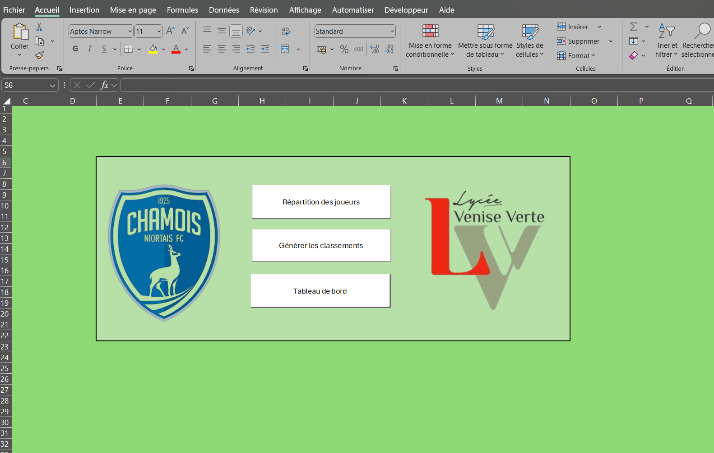

Élaborer une application en VBA pour gérer la sélection des candidats en section sportive de football.
L'objectif est de pouvoir proposer la saisie des performances des candidats à chaque fin d'atelier de tests, le jour de la sélection. L'attribution des notes doit être automatique en fonction des performances et des barèmes établis (voir le sujet en bas de la page).
Le responsable de recrutement nous a aussi demandé d'établir un classement des candidats à l'issue de la journée de tests.
Pour ouvrir l'application il faut aussi ouvrir le fichier source.
Tout d'abord, sur un fichier Excel indépendant, nous retrouvions la liste des candidats avec leurs informations personnelles ainsi qu'une autre feuille avec les barèmes.
La première étape dans la construction de cette application a été de faire la répartition des joueurs en fonction de leur année de naissance. Lorsque l'on clique sur le bouton "Répartition des joueurs", une nouvelle feuille de calcul est créée avec la répartition des joueurs" sur la page d'accueil, cela rempli
automatiquement 3 feuilles : "RésultatsGardiens" , "RésultatsJoueurs07-08" et "RésultatsJoueurs09-10". Dans ces feuilles, on retrouve des informations sur l'identité du candidat (nom, prénom, club, année de naissance, poste) mais aussi ses résultats aux tests ainsi que ses notes attribuées. Pour ce faire, nous avons créé une macro qui récupère les informations personnelles sur le fichier Excel indépendant puis
nous avons écrit une fonction que l'on utilise comme une fonction Excel pour le calcul des notes en fonction des barèmes et des tests. De plus, le nom et prénom des joueurs est un lien, si on clique sur un nom, une fenêtre pop-up s'ouvre et apparait une fiche individuelle qui reprend toutes les informations présentes sur la feuille ainsi que le nombre total de points et le rang dans le classement.
La deuxième partie sert à générer le classement. On retrouve sur la page d'accueil un deuxième bouton "Générer les classements", il nous permet d'accéder directement à la feuille "Classementfinal" et elle contient le classement par groupe (gardien, 2007-2008 et 2099-2010) en fonction du nombre total de points obtenus à la fin de la journée.
Et enfin la troisième partie mais peut - être la plus importante, c'est le tableau de bord. Sur la page d'accueil nous retronvons un dernier bouton "Tableau de bord", il nous emmène sur la feuille "TableauBord". Sur cette nouvelle feuille nous allons retrouver un comparatif, il faut sélectionner une catégorie puis 2 joueurs et cliquer sur le bouton "Voir le comparatif". Cela créer une nouvelle feuille, elle a pour nom le nom de famille des 2 joueurs (nom1_nom2). elle est composée d'un tableau qui reprend les notes de chaque joueur,
un graphique radar qui permet de visualiser plus facilement la différence entre leurs notes. On retrouvera aussi 2 graphiques barres qui permettent encore une fois de comparer leurs notes. De retour sur le tableau de bord, à côté de la partie comparatif, il y a une liste des clubs des candidats. Quand on clique sur le bouton "Voir les statistiques du club", après avoir choisi un club, cela créer une nouvelle feuille avec le nom du club. Cette feuille contient exactement la même chose que dans les feuilles résultats
de la première partie mais pour les joueurs qui proviennent du club sélectionné.
Enfin sur la feuille tableau de bord, il y a 2 tableaux, un premier qui permet de faire le point sur les effectifs par catégorie et sur les informations personnelles et le second tableau rassemblent les moyennes de chaque catégorie à chaque test. A côté de ses 2 tableaux, il y a un graphique circulaire qui reprend les informations du premier tableau de cette feuille et qui est modulable avec les deux listes.
Pour finir, nous avons une feuille "Cartographie" qui permet de visualiser l'origine des joueurs à l'aide d'une carte où il est possible de filtrer sur les régions.
- la fonctionnalité de l'application
- l'optimisation, les bonnes pratiques et les commentaires du code
- le niveau d'exigence des fonctionnalités
- le tableau de bord (les statistiques choisies, les graphiques, ...)
- l'amélioration de l'ergonomie des feuilles de calculs (protection des cellules, paramétrage pour les années suivantes, ...)
- les propositions supplémentaires, la créativité et la pertinence des choix
- l'utilisation et l'approfondissement de VBA
- la création d'un tableau de bord dynamique
- la liaison entre VBA et les éléments d'Excel (graphiques)
- l'automatisation et l'optimisation avec un découpage du code en un maximum de procédures et de fonctions réutilisables
- le respect du cahier des charges : les barèmes
Ce projet a été long mais vraiment très enrichissant. J'ai mis en pratique tout ce que nous avons pu voir en cours sur le langage VBA : la construction de user form, l'utilisation d'objet (bouton, liste, ...), la création et l'utilisation de fonction dans Excel, la réalisation de graphique dynamique ainsi que de faire des liens entre les différentes feuilles de calculs, fichiers Excel et divers éléments. Ce projet m'a vraiment permis de progresser dans l'utilisation de ce langage.
Voir l'application Le fichier source Voir le sujet